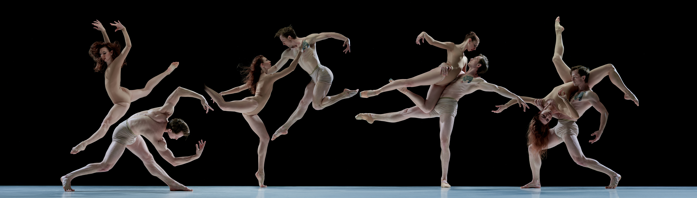

ARTISTIC IDENTITY & DIGITAL PRESENCE
Your Art Deserves a Digital Home.
Why every dance artist needs a website and how a digital presence can help communicate their artistic identity, share their work and connect with audiences.
Read the Article →